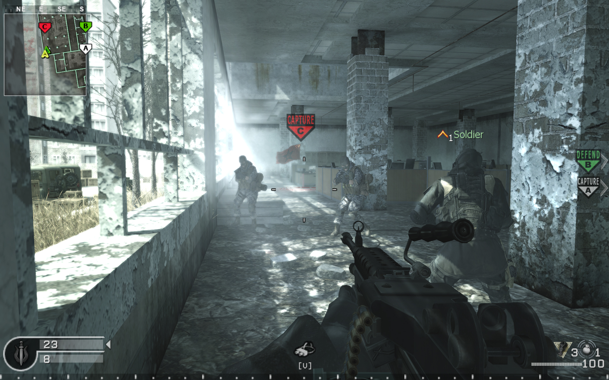
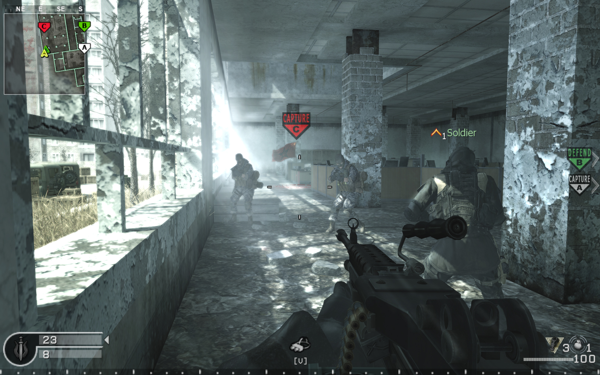

CoD 4: Modern Warfare's Most Iconic Mission Was A Hard Sell Internally: "Nobody Thought It Was Cool"
 

Call of Duty 4: Modern Warfare is a game filled with memorable and explosive set pieces, but the central idea behind what would become one of the franchise's most iconic missions, All Ghillied Up, didn't initially win over many developers at Infinity Ward. The mission is now mimicked in nearly every modern military shooter, including almost every Call of Duty to come after 2007's Modern Warfare.
Datum objave: 26.10.2023.
Izvor